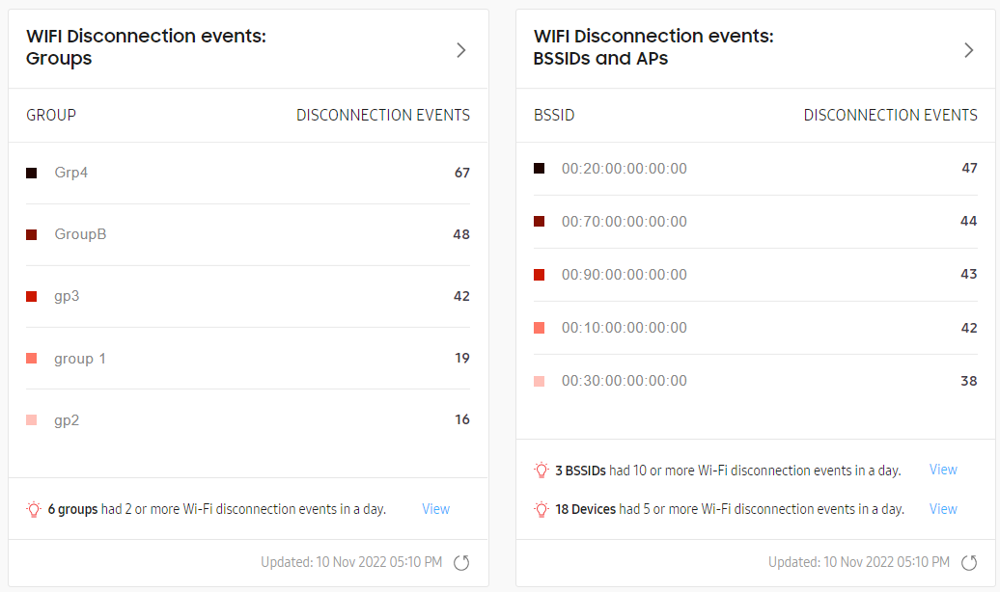
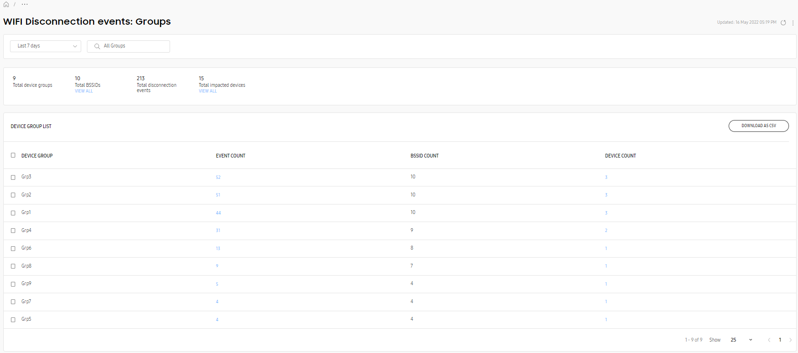
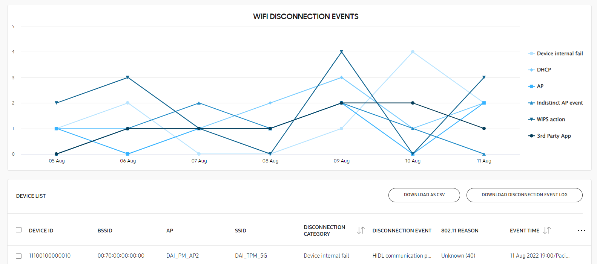

Wi-Fi disconnection events
Last updated July 26th, 2023
How it works
On Samsung devices, a Wi-Fi module runs at the system level to detect issues. Abnormal Wi-Fi disconnection events are broadcast to the Knox Asset Intelligence agent and uploaded to the server in real time. Use these insights to identify exactly why your devices are disconnected, and conduct a root cause analysis with the historical trends that Knox Asset Intelligence provides.
The categories of Wi-Fi disconnection events are:
| Disconnection category | Event | Troubleshooting action |
|---|---|---|
| Device internal fail | Abnormal disconnect from conventional field (LCD on) | The root cause is difficult to determine through the device. If this event occurs repeatedly, please check the access point. |
| Disabled by an AP Association Reject event | An additional review of device logs and the access point is required to determine the exact cause of an Association Reject event. One potential cause may be the MAC security configuration --- ensure you either set the MAC security category of the access point or disable MAC security. | |
| Disabled due to an authentication (Wrong Password) | Make sure you enter the correct password. Passwords are case-sensitive and may include letters, numbers, symbols, or spaces. | |
| Scan fails more than 3 times in 3 minutes | If this event occurs repeatedly, there may be internal issues in the device. Device logs are required for further troubleshooting. | |
| Driver HANG occurs | If this event occurs repeatedly, there may be internal device driver issues. Device logs are required for further troubleshooting. | |
| HIDL communication problem occurred | If this event occurs repeatedly, there may be internal device driver issues. Device logs are required for further troubleshooting. | |
| Indistinct AP event | Abnormal disconnect from conventional field (LCD on) | The root cause is difficult to determine through the device. If this event occurs repeatedly, please check the access point. |
| Disabled by an AP Association Reject event | An additional review of the device logs and access point is required to determine the exact cause of an Association Reject event. One potential cause may be the MAC security configuration — ensure you either set the MAC security category of the access point or disable MAC security. | |
| Disabled due to an authentication (Wrong Password) | Make sure you enter the correct password. Passwords are case-sensitive and may include letters, numbers, symbols, or spaces. | |
| DHCP | Wrong IP address given by AP | The dynamic host configuration protocol (DHCP) failure may be caused by a problem in the access point's DHCP server configuration, or by a wide area network (WAN) port problem or another DHCP server. For example, another port may be connected instead of the WAN port. To determine the exact cause, an additional review of the device logs and access point is required. |
| DHCP fail (Need to check air log) | Check whether the DHCP server is configured in the access point, and if the IP is properly allocated. | |
| AP | Abnormal cause message sent by AP | There was a general disconnection from the access point. If this event occurs repeatedly, please check the access point. |
| Unreceivable packets sent by AP | There was a general disconnection from the access point. If this event occurs repeatedly, please check the access point. | |
| WIPS action | Caused by control system (MDM, EMM) | Wireless network connections may be blocked by a control system, such as an EMM. Contact your network administrator for assistance. A WIPS (Wireless Intrusion Prevention System) guards against Wi-Fi threats that could potentially cause security breaches, such as unauthorized access points. |
| 3rd Party App | Caused by 3rd Party App | A third-party app may be interfering with Wi-Fi operation. Device logs are required for further troubleshooting. |
| WIFI status has not changed | A third-party app may be interfering with Wi-Fi operation. Device logs are required for further troubleshooting. |
By default, event logs are uploaded to the server once every three hours. You can configure this time interval through your Dashboard settings.
Dashboard tile views
For a description of the dashboard tiles, refer to Dashboard tiles explained.
Main tile view
Knox Asset Intelligence provides two Wi-Fi disconnection charts — one that categorizes disconnection events by group, and another that categorizes them by BSSID. Events are arranged in descending order. The five groups and BSSIDs with the highest number of abnormal disconnections are shown.

For event descriptions associated with the above categories, refer to How it works. You can also hover over a bar in the chart to see the distribution of events within that category, or hover over a BSSID name to see the human-friendly access point names associated with that BSSID.
At the bottom of each chart, you can check which groups, BSSIDs, or devices have exceeded the issue thresholds. Click VIEW next to one of the insights to go to a Drill-down view of all affected assets of that type.
Click Expand to see a list of all groups or BSSIDs that recorded Wi-Fi disconnection events over the configured time range. You can choose between Today, Yesterday, Last 7 days, and Last 14 days for the time range.
Expanded view

The expanded view displays a list of BSSIDs and their associated Wi-Fi disconnection events. At the top, the time range follows the global time range set in the console — any events occurring outside of this range aren’t displayed. You can also adjust the time range through the list at the top.
The total number of BSSIDs, SSIDs, APs, disconnection events, and impacted groups and devices are also listed in the page description below the title. Under certain categories, you can click View all to jump to a list of impacted devices, groups, or BSSIDs.
If you’re viewing the Groups chart, the following information is available:
- DEVICE GROUP — The name of the device group.
- EVENT COUNT — The number of disconnection events. Click the event count number to view a list of affected devices.
- BSSID COUNT — The number of affected BSSIDs.
- DEVICE COUNT — The number of devices that reported a disconnection event.
If you’re viewing the BSSIDs/APs chart, the following information is available:
- BSSID — The access point’s basic service set identifier, used to uniquely identify it.
- AP — The friendly name given to the BSSID.
- EVENT COUNT — The number of disconnection events. Click the event count number to view a list of affected devices.
- IMPACTED DEVICES — The number of devices that reported a disconnection event.
- SSID — The name of the network.
- AP VENDOR — The name of the access point provider.
- AP TYPE — The type of access point. For example, a Passpoint or carrier-supported network.
- BANDS — The frequency band associated with the Wi-Fi channel.
- DEVICE GROUP — The device group associated with the access point.
Drill down view

Three drill-down views are available to show additional information about abnormal disconnection events for troubleshooting. If the time range is set to Today or Yesterday, no chart is available. For the Last 30 days and Last 60 days time ranges, neither the chart nor the table info are available.
Depending on whether you choose to view events associated with a BSSID, device group, or device, the list view differs slightly.
The available list data includes the following:
- DEVICE ID — The IMEI/MEID or serial number of the device. This information is only shown when viewing events by access point.
- DEVICE GROUP — The name of the group the device belongs to.
- BSSID — The access point’s basic service set identifier, used to uniquely identify it. This identifier is only shown when viewing events by device ID.
- AP — The friendly name given to the BSSID.
- SSID — The name of the network. This category is only shown when viewing events by device ID.
- DISCONNECTION CATEGORY — The Wi-Fi disconnection category that the event belongs to. See How it works for a list of disconnection categories.
- DISCONNECTION EVENT — A brief description of the disconnection cause. See How it works for additional information on each event.
- 802.11 REASON — The error description corresponding to an IEEE 802.11 code. Refer to IEEE 802.11 codes for more information.
- EVENT TIME — The time the event occurred, in the format DD/MM/YYYY 00:00/City.
- DISCONNECTION EVENT LOG — If available, a log of the device’s disconnection events that can be downloaded.
If you want to obtain details about a device’s disconnection events, click DOWNLOAD DISCONNECTION EVENT LOG at the top of the device list. This button is only enabled if the device has a disconnection event log file available for download. Device logs are collected when an event constitutes more than 10% of the total disconnection events for the selected time period.
To view logs that were generated prior to Knox Asset Intelligence 22.08, use a decoder tool on the file. Any logs generated after that version don’t need to be decoded.
You can use the search bar above the list to search for a specific device ID or BSSID. You can also click the Filter icon to show the filter panel, where you can sort data by specific parameters. Information in the chart is filtered according to the parameters you specify in this panel.
For details about Wi-Fi disconnection events and suggested actions to resolve them, see How it works and IEEE 802.11 codes.
IEEE 802.11 codes
IEEE 802.11 provides the technical standard for devices communicating across wireless networks. The standard provides a type of error code called a reason code, which describes why a device failed to connect to an access point. When a connectivity issue is logged, the Knox Asset Intelligence console may display a reason code to help you troubleshoot the problem.
The following table lists all possible reason codes you may encounter.
| Reason code | 802.11 reason |
|---|---|
| 0 | Unknown |
| 1 | Unspecified reason |
| 2 | Previous authentication no longer valid |
| 3 | Station is leaving (or has left) IBSS or ESS |
| 4 | Disassociated due to inactivity |
| 5 | Disassociated because AP is unable to handle all currently associated stations |
| 6 | Class 2 frame received from nonauthenticated station |
| 7 | Class 3 frame received from nonassociated station |
| 8 | Disassociated because sending station is leaving (or has left) BSS |
| 9 | Station requesting (re)association is not authenticated with responding station |
| 10 | Disassociated because the information in the Power Capability element is unacceptable |
| 11 | Disassociated because the information in the Supported Channels element is unacceptable |
| 12 | Disassociated due to BSS transition management |
| 13 | Invalid information element, i.e., an information element defined in this standard for which the content does not meet the specifications in Clause 9 |
| 14 | Message integrity code (MIC) failure |
| 15 | 4-Way Handshake timeout |
| 16 | Group Key Handshake timeout |
| 17 | Information element in 4-Way Handshake different from (Re)Association Request/Probe Response/Beacon frame |
| 18 | Invalid group ciphe |
| 19 | Invalid pairwise ciphe |
| 20 | Invalid AKMP |
| 21 | Unsupported RSN information element version |
| 22 | Invalid RSN information element capabilities |
| 23 | IEEE 802.1X authentication failed |
| 24 | Cipher suite rejected because of the security policy |
| 25 | TDLS direct-link teardown due to TDLS peer STA unreachable via the TDLS direct link |
| 26 | TDLS direct-link teardown for unspecified reason |
| 27 | Disassociated because session terminated by SSP request |
| 28 | Disassociated because of lack of SSP roaming agreement |
| 29 | Requested service rejected because of SSP cipher suite or AKM requirement |
| 30 | Requested service not authorized in this location |
| 31 | TS deleted because QoS AP lacks sufficient bandwidth for this QoS STA due to a change in BSS service characteristics or operational mode |
| 32 | Disassociated for unspecified, QoS-related reason |
| 33 | Disassociated because QAP lacks sufficient bandwidth for this QSTA |
| 34 | Disassociated because excessive number of frames need to be acknowledged, but are not acknowledged due to AP transmissions and/or poor channel conditions |
| 35 | Disassociated because QSTA is transmitting outside the limits of its TXOPs |
| 36 | Requesting STA is leaving the BSS (or resetting) |
| 37 | Requesting STA is no longer using the stream or session |
| 38 | Requesting STA received frames using a mechanism for which a setup has not been completed |
| 39 | Requested from peer STA due to timeout |
| 45 | Peer STA does not support the requested cipher suite |
| 46 | In a DLS Teardown frame: The teardown was initiated by the DLS peer / In a Disassociation frame: Disassociated because authorized access limit reached |
| 47 | In a DLS Teardown frame: The teardown was initiated by the AP / In a Disassociation frame: Disassociated due to external service requirements |
| 48 | Invalid FT Action frame count |
| 49 | Invalid pairwise master key identifier (PMKID) |
| 50 | Invalid MDE |
| 51 | Invalid FTE |
| 52 | Mesh peering canceled for unknown reasons |
| 53 | The mesh STA has reached the supported maximum number of peer mesh STAs |
| 54 | The received information violates the Mesh Configuration policy configured in the mesh STA profile |
| 55 | The mesh STA has received a Mesh Peering Close frame requesting to close the mesh peering. |
| 56 | The mesh STA has resent dot11MeshMaxRetries Mesh Peering Open frames, without receiving a Mesh Peering Confirm frame. |
| 57 | The confirmTimer for the mesh peering instance times out. |
| 58 | The mesh STA fails to unwrap the GTK or the values in the wrapped contents do not match |
| 59 | The mesh STA receives inconsistent information about the mesh parameters between mesh peering Management frames |
| 60 | The mesh STA fails the authenticated mesh peering exchange because due to failure in selecting either the pairwise cipher suite or group cipher suite |
| 61 | The mesh STA does not have proxy information for this external destination. |
| 62 | The mesh STA does not have forwarding information for this destination. |
| 63 | The mesh STA determines that the link to the next hop of an active path in its forwarding information is no longer usable. |
| 64 | The Deauthentication frame was sent because the MAC address of the STA already exists in the mesh BSS. See 11.3.6. |
| 65 | The mesh STA performs channel switch to meet regulatory requirements. |
| 66 | The mesh STA performs channel switching with unspecified reason. |
| 66–65535 | Unknown |
On this page
Is this page helpful?